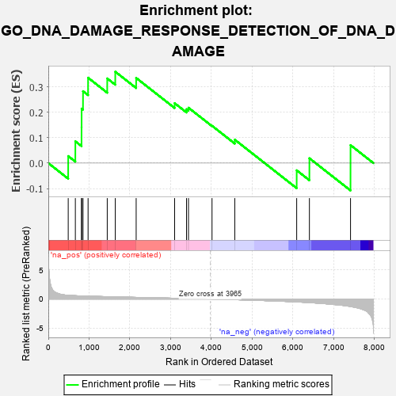
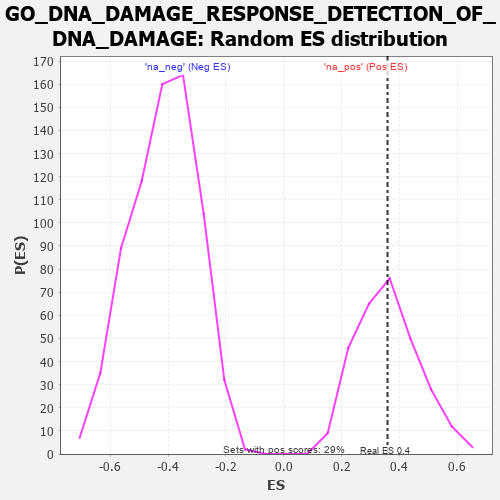

| | | Dataset | 7d |
| Phenotype | NoPhenotypeAvailable |
| Upregulated in class | na_pos |
| GeneSet | GO_DNA_DAMAGE_RESPONSE_DETECTION_OF_DNA_DAMAGE |
| Enrichment Score (ES) | 0.35913813 |
| Normalized Enrichment Score (NES) | 1.0035298 |
| Nominal p-value | 0.48096886 |
| FDR q-value | 0.7480085 |
| FWER p-Value | 1.0 |
Table: GSEA Results Summary

Fig 1: Enrichment plot: GO_DNA_DAMAGE_RESPONSE_DETECTION_OF_DNA_DAMAGE
Profile of the Running ES Score & Positions of GeneSet Members on the Rank Ordered List
| PROBE | GENE SYMBOL | GENE_TITLE | RANK IN GENE LIST | RANK METRIC SCORE | RUNNING ES | CORE ENRICHMENT | | 1 | RFC2 | | | 488 | 0.635 | 0.0275 | Yes |
| 2 | RFC3 | | | 663 | 0.571 | 0.0855 | Yes |
| 3 | RFC4 | | | 815 | 0.528 | 0.1405 | Yes |
| 4 | RPA1 | | | 817 | 0.527 | 0.2140 | Yes |
| 5 | RPA2 | | | 851 | 0.519 | 0.2825 | Yes |
| 6 | WDR48 | | | 975 | 0.489 | 0.3354 | Yes |
| 7 | RBX1 | | | 1445 | 0.401 | 0.3326 | Yes |
| 8 | DDB1 | | | 1642 | 0.366 | 0.3591 | Yes |
| 9 | DTL | | | 2154 | 0.284 | 0.3347 | No |
| 10 | CUL4A | | | 3097 | 0.137 | 0.2354 | No |
| 11 | RFC5 | | | 3389 | 0.091 | 0.2115 | No |
| 12 | RFC1 | | | 3437 | 0.085 | 0.2175 | No |
| 13 | PARP1 | | | 4014 | -0.010 | 0.1465 | No |
| 14 | PNKP | | | 4572 | -0.111 | 0.0920 | No |
| 15 | UBB | | | 6090 | -0.503 | -0.0284 | No |
| 16 | NEK1 | | | 6402 | -0.618 | 0.0189 | No |
| 17 | UBC | | | 7410 | -1.274 | 0.0705 | No |
Table: GSEA details [plain text format]

Fig 2: GO_DNA_DAMAGE_RESPONSE_DETECTION_OF_DNA_DAMAGE: Random ES distribution
Gene set null distribution of ES for GO_DNA_DAMAGE_RESPONSE_DETECTION_OF_DNA_DAMAGE